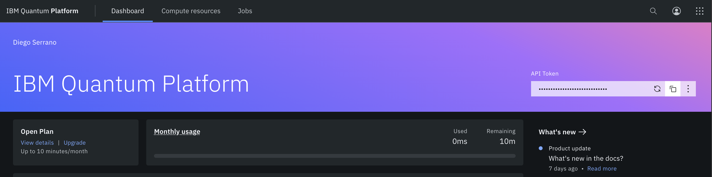

Configuring Qiskit#
The steps in this chapter are entirely optional. However, if you want to run your quantum programs in IBM’s quantum processing units (QPUs), you do need to setup your IBM Quantum account.
Furthermore, if you want the output of your code to match exactly how things are displayed in this textbook, you need to make the changes described in the Qiskit Configuration File section.
1. Setting Up and Linking your IBM Quantum Account #
If you plan to run your quantum programs in IBM’s QPUs, you need to have an IBM Quantum Account and link it to your local Qiskit installation. Here’s how:
Visit https://quantum.ibm.com/ and create an account
Log into your account, and on the top right corner, copy your API token: 
On your local machine, open a Jupyter Notebook and run the code below after pasting your API token over the
your-token-herestring. Make sure to not remove the single quotes' 'enclosing it:from qiskit_ibm_runtime import QiskitRuntimeService QiskitRuntimeService.save_account('your-token-here')
This step creates a file that stores your API token under
~/.qiskit/qiskit-ibm.jsonif you’re in macOS or Linux, or underC:\Users\<your-username>\.qiskit\qiskit-ibm.jsonin Windows. So, from now on, Qiskit will retrive your token automatically.
{kind=link}
2. Creating a Qiskit Configuration File #
The Qiskit configuration file stores preferences of how you want certain outputs displayed in your system. For example, by default, Qiskit “prints” quantum circuits in text form, so to draw them in the form of colorful pictures, you need to use additional options in your code. But with the Qiskit configuration file, you can have Qiskit display circuits as images by.
In this section, we will provide a configuration that matches what is used throughout the textbook.
In your home directory, create a
.qiskitfolder (If you followed the steps to set your IBM Quantum account, the folder should already exist).In a terminal window run:
mkdir ~/.qiskit
If you’re in Windows, create the folder under:
C:\Users\<your-username>\.qiskitCreate the configuration file by running:
touch ~/.qiskit/settings.conf
Open the configuration file using you favorite text editor.
In a macOS terminal you can simply run:
open -a TextEdit ~/.qiskit/settings.conf
In Linux obviously use emacs.
In Windows go to the
.qiskitdirectory, right click on the file, and open with Notepad.
Copy and paste the following settings into the file and save it:
[default] circuit_drawer = mpl circuit_mpl_style = iqx-dark state_drawer = latex circuit_reverse_bits = True
Here’s a description of what each of these options does:
Qiskit’s default way of drawing circuits is by using text.
circuit_drawer = mplswitches this option to display circuits as colorful images instead.circuit_mpl_style = iqx-darkchanges the default color pattern to draw circuits from light mode to dark mode.Statevectors in Qiskit are displayed as numpy arrays in text form.
state_drawer = latexchanges this default configuration to render Statevectors in LaTeX using ket notation.Qiskit’s way of ordering qubits in circuits is backwards with respect to almost every resource out there (I have a youtube video explaining this in detail).
circuit_reverse_bits = Truereverses the ordering so it matches that of what most people find reasonable.